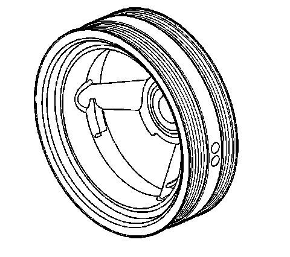

35. Crankshaft Balancer Cleaning and Inspection
Crankshaft Balancer Cleaning and Inspection

1. Clean the crankshaft balancer in solvent.
2. Clean the belt grooves of all dirt or debris with a wire brush.
3. Dry the crankshaft balancer with compressed air.
4. Inspect the crankshaft balancer for the following conditions:
^ Worn, grooved, or damaged hub seal surface
A crankshaft balancer hub seal surface with excessive scoring, grooves, rust or other damage must be replaced.
Minor imperfections on the hub seal surface may be removed with polishing compound or fine grade emery cloth.
Important: In order for the belt to track properly, the belt grooves should be free of all dirt or debris.
^ Dirty or damaged belt grooves
The balancer belt grooves should be free of any nicks, gouges, or other damage that may not allow the belt to track properly.
Minor imperfections may be removed with a fine file.
^ Worn, chunking, or deteriorated rubber between the hub and pulley